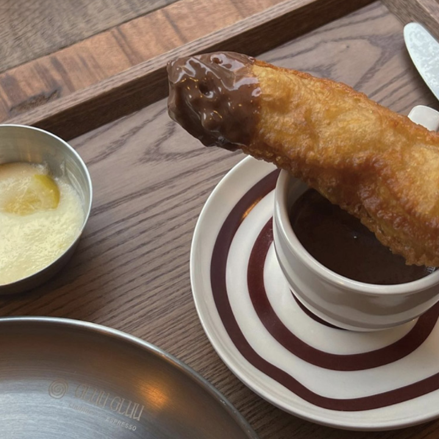

쿠킹 : 발 빠르게 접수해야 할 신상 카페 4
여기가
핫해 핫해
어디에서도 본 적 없는 독특한 콘셉트로 인기몰이 중인 카페. 오픈하자마자 발 빠른 트렌드세터들의 마음을 단숨에 사로잡은 따끈따끈한 신상 카페 네 곳을 찾았다.
스페인 남부식 추러스
글루글루
스페인 남부식 추러스 글루글루
창신육회는 아침에 외국인 손님, 저녁에 내국인 손님이 가득하다. 슬러시 소주 냉장고는 이 가게 자랑 중 하나다. ⓒ젠지서울
오피스가 밀집한 포스코 사거리 뒤편, 한적한 골목 어귀에 문을 연 ‘글루글루’는 스페인 남부식 추러스 ‘뽀라스’와 스페인 전통 커피를 함께 선보이는 추레리아 겸 에스프레소 바다. 뽀라스는 우리가 익히 아는 추러스와는 크기와 두께부터 다른데 주문과 동시에 갓 튀겨내 겉은 바삭, 속은 촉촉한 식감이 그야말로 중독적이다.
시나몬이나 설탕을 첨가하지 않고 에스프레소 잔에 제공하는 다크 초콜릿을 찍어 먹는 게 특징으로, 아메리카노에 곁들이면 스페인으로 순간 이동한 기분마저 든다.